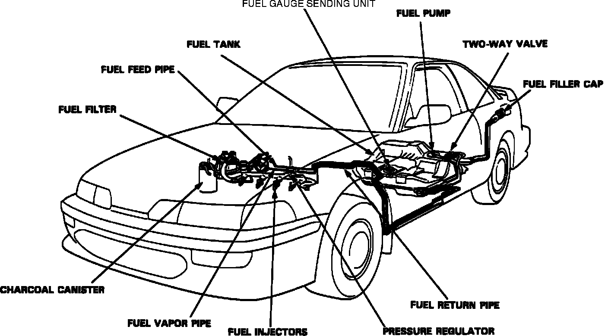
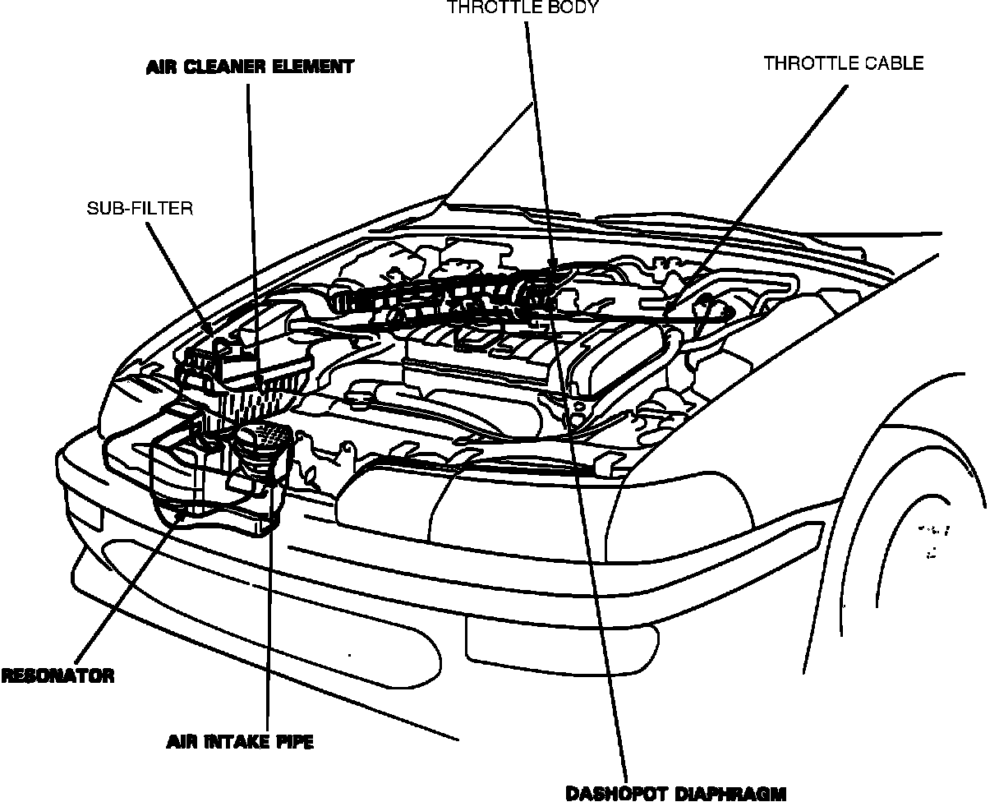
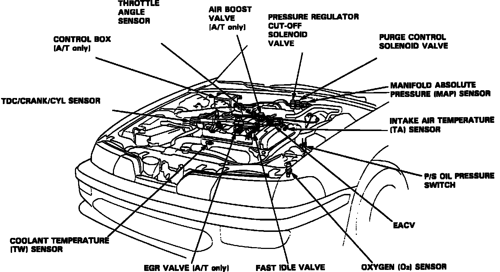

General System Description
Fuel Injection System:

FUEL INJECTION
The PGM-FI (programmed fuel injection) system is an electronically controlled multi-point sequential fuel injection system. Injection quantity is determined by the length of time the injector is open, (injection duration). Injection duration is controlled by the "ECU" (Electronic Control Unit). The "ECU" contains a basic injection program which is modified by various input signals to achieve a precise injection duration. Refer to "Computers and Control Systems" for additional information regarding electronic controls.
Air Intake System:

Component Locations:

AIR INTAKE SYSTEM
The intake air system controls engine idling, fast idle, low speed, and high speed operating demands. Engine idle is controlled by several different components depending on engine and ambient outside temperature. Some of these idle components are "ECU" controlled. Refer to "Computers and Control Systems" for additional information regarding these electronic idle controls.
NOTE: ECU CONTROLLED COMPONENTS. These components are related to fuel delivery and engine air intake, however since they are "ECU" controlled they will be addressed in depth under "Computers and Control Systems".
ECU CONTROLLED COMPONENTS
1. Electronic Air Control Valve (EACV)
2. Fast Idle Control Solenoid Valve
3. Fuel Pressure Regulator Cut-off Solenoid
4. Injector Resistor
FUEL SYSTEM COMPONENTS
Components related to fuel delivery and engine air intake are:
1. Accelerator Pedal
2. Air Boost Valve
3. Air Cleaner
4. Air Intake Tube
5. Dashpot
6. Fast Idle Valve
7. Fuel Filter
8. Fuel Injectors
9. Fuel Pressure Regulator
10. Fuel Pump
11. Fuel Pump Main Relay
12. Fuel Rail (pipe)
13. Fuel Supply and Return Lines
14. Fuel Tank
15. Resonator
16. Throttle Body
17. Throttle Cable
For information regarding electrical or electronic controls, refer to "Computers and Control Systems".